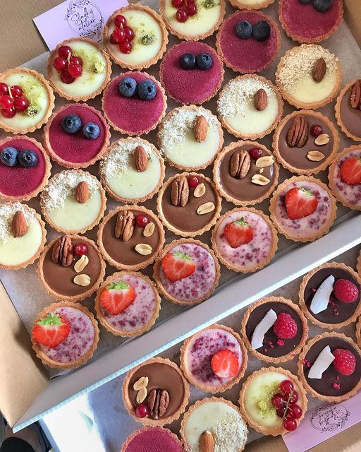

Fresh Fruit Tart with Custard
Introduction
A fruit tart is an elegant dessert that balances a crisp pastry shell, silky custard, and bright fresh fruit. It looks impressive but is surprisingly achievable at home. The tart shell should be blind-baked until golden and crisp; the custard should be smooth and thick enough to hold fruit on top. Choose seasonal fruit for the best flavor and color — strawberries, kiwi, and blueberries make a beautiful palette. Finish with a thin glaze to give the fruit shine and keep it fresh. This tart is great for celebrations when you want something light, pretty, and delicious.
Ingredients
- 1 1/4 cups all-purpose flour
- 1/2 cup cold butter, cubed
- 1/4 cup powdered sugar
- 2 egg yolks (for shell)
- 2 cups milk (for custard)
- 3 egg yolks (for custard)
- 1/3 cup sugar (custard)
- Fresh fruit for topping
Instructions
- Make tart shell: blend flour, butter, powdered sugar until crumbs form. Add yolks and form dough. Chill 30 minutes.
- Roll and line tart pan, blind-bake with pie weights at 375°F for 15–20 minutes until golden.
- Make custard: heat milk, temper into beaten yolks and sugar, then cook until thick. Chill slightly before filling shell.
- Pour custard into cooled shell, arrange sliced fruit on top, and brush with warmed apricot jam for glaze.
- Chill to set and serve chilled for best texture and flavor.